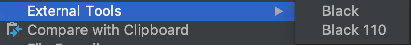

Author
The author of Black is Łukasz Langa, a Pythonista from Białystok, Poland. He is a Python core developer and Python 3.8 release manager.
Black
A PEP-8 is just a style guide so there are many ways to format the same part of the code and all of them are correct.
class GoogleCloudBaseHook(BaseHook):
def __init__(self, gcp_conn_id: str = 'google_cloud_default', delegate_to: Optional[str] = None) -> None:
pass
class GoogleCloudBaseHook(BaseHook):
def __init__(self,
gcp_conn_id: str = 'google_cloud_default',
delegate_to: Optional[str] = None) -> None:
pass
class GoogleCloudBaseHook(BaseHook):
def __init__(
self,
gcp_conn_id: str = 'google_cloud_default',
delegate_to: Optional[str] = None) -> None:
pass
class GoogleCloudBaseHook(BaseHook):
def __init__(
self,
gcp_conn_id: str = 'google_cloud_default',
delegate_to: Optional[str] = None
) -> None:
pass
Linters give information which part of the code violates PEP-8, but they do not give any solutions. Usually it is quite easy to fix, but it is annoying and time-consuming. Also, the chosen code style leaves space for opinionated discussions which may be avoided. A good code formatter can eliminate it.
Black is the uncompromising Python code formatter. By using it, you agree to cede control over minutiae of hand-formatting. In return, Black gives you speed, determinism, and freedom from pycodestyle nagging about formatting. You will save time and mental energy for more important matters.
-- black documentation
Black uses a subset of PEP-8 as a code style. When this code style was built every decision was preceded by discussion, supported by solid arguments and concrete parts of PEP-8. Under the hood the code is parsed to Concrete Syntax Tree (CST) and Abstract Syntax Tree (AST) so when the file is parsed, the code behaviour remains exactly the same. You can learn more about these concepts from sources listed at the end of text.
Pros:
- Fast.
- Deterministic.
When run multiple times, result is always the same. - Saves time during code review.
No more discussions about where the line should be broken. - Code reading is easier.
As Uncle Bob said, code is read ten times more often than written. Due to this fact, when code is styled in a consistent way ( and Black provides consistent output) it minimizes effort while reading it. You can fully focus on syntax and logic and not on style. - No additional (unneseccary?) refactoring during coding.
During working on some part of code sometimes you may want to change (and sometimes you do it) some adjacent areas which are not well formatted (at least you think they are not). Black gets rid off this additional refactors. - Minimal configuration.
Cons:
- Requires Python 3.6+.
Older versions can be formatted but to make it work, the 3.6+ version is required. - Does not touch strings.
Long strings will never be broken, even if they exceed the line length. - Does not touch imports.
- Sometimes it is a PITA to configure it with ISORT (which sorts imports).
- Still in beta.
Using Black
Install Black
To use it out of the box:
pip install black
black {source_file_or_directory}
Do you want to format Python by using Python? No problem:
import black
black.format_file_in_place(
"path/to/file.py,
mode=black.FileMode(line_length=110),
fast=False,
write_back=black.WriteBack.YES,
)
pyproject.toml
If you need to change sensible defaults you can do it by defining them in pyproject.toml file (this file is described in
Example pyproject.toml:
[tool.black]
line-length = 88
target-version = ['py37']
include = '\.pyi?$'
exclude = '''
(
/(
\.eggs # exclude a few common directories in the
| \.git # root of the project
| \.hg
| \.mypy_cache
| \.tox
| \.venv
| _build
| buck-out
| build
| dist
)/
| foo.py # also separately exclude a file named foo.py in
# the root of the project
)
'''
pre-commit
If you don't use pre-commit in your projects, you should start using it immediately. Pre-commit framework makes configuring pre-commit hooks pleasant and convenient. The hook for Black parses files to be committed and if any of them changed during this parsing, the hook fails and prevents the commit to be successful. It means the code was not compliant with the code style. The drawback of this is that you have to add formatted files to the staging area and commit them again.
Example .pre-commit-config.yaml:
repos:
- repo: https://github.com/ambv/black
rev: 19.3b0
hooks:
- id: black
name: Formats python files using black
language_version: python3.6
PyCharm/IntelliJ IDE - External Tools
In IDE you can define useful external tools available in Tools -> External Tool and under the right-click menu.

Install black and locate the installation folder.
pip install black
which black
Set External Tool in IDE.
On macOS:
PyCharm -> Preferences -> Tools -> External Tools
On Windows / Linux / BSD:
File -> Settings -> Tools -> External Tools
Click the + icon to add a new external tool.
Official documentation suggests the following values:
Name: Black
Description: Black is the uncompromising Python code formatter.
Program: <install_location>
Arguments: "$FilePath$"
I personally modified them to better suit my needs:
The version which reads settings from the pyproject.toml is the same as above with an additional Working Directory property:
Working directory: $ProjectFileDir$
Version with specific line length:
Arguments: "$FilePath$" --line-length 110
File-watcher in IDE
Run Black on every file save:
Make sure you have the File Watcher plugin installed.
Go to Preferences or Settings -> Tools -> File Watchers and click + to add a new watcher:
Name: Black
File type: Python
Scope: Project Files
Program: <install_location>
Arguments: $FilePath$
Output paths to refresh: $FilePath$
Working directory: $ProjectFileDir$
Uncheck "Auto-save edited files to trigger the watcher"
Summary
I hope you will brighten your code with Black and make your life easier (and prettier ;) ).
Sources:
- black
- black playground
- PEP 8 - Style Guide for Python Code
- PEP 518 - Specifying Minimum Build System Requirements for Python Projects
- The latest with BLACK, so you can stop worrying about Formatting - Łukasz Langa - PyBay 2019
- Paint it black - wdrożenie autoformatera - Marcin Jaroszewski - PyWaw #87
- Emily Morehouse-Valcarcel - The AST and Me - PyCon 2018
- Understanding and using Python's AST - Episode #152 - talkpython.fm
- Abstract vs. Concrete Syntax Trees - Eli Bendersky's website
- Extending 2to3 with your own fixers - python3porting
- Parsing In Python: Tools And Libraries - Federico Tomassetti
- pre-commit